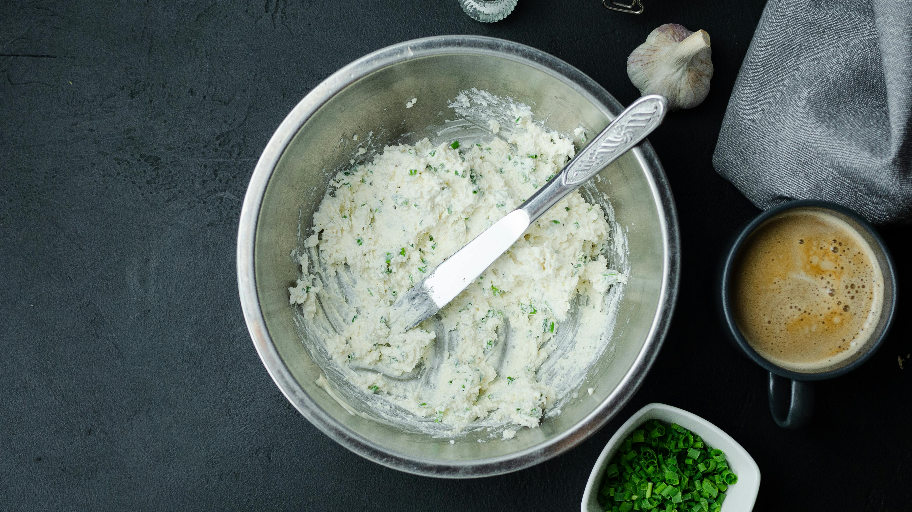
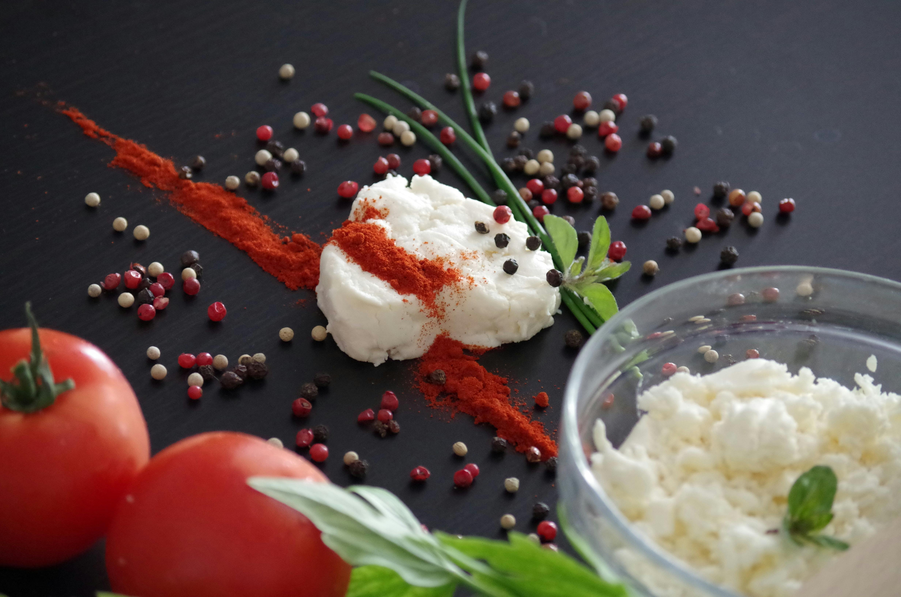

A zöldfűszeres túrókrém egy könnyű, friss és ízletes krém, amely remekül illik friss kenyérhez, zöldségekhez, de akár egy szendvics vagy hidegtál alapjaként is szolgálhat. A túró természetes fehérjeforrás, míg a friss zöldfűszerek intenzív ízt és frissességet adnak ennek az egyszerű, mégis sokoldalú krémnek. Gyorsan elkészíthető, és ízlés szerint variálható a különböző fűszerekkel.
Zöldfűszeres túrókrém
Hozzávalók

- 250 g túró (félzsíros vagy zsíros)
- 2 evőkanál tejföl (vagy görög joghurt)
- 1 evőkanál olívaolaj
- 1 kis gerezd fokhagyma (aprítva vagy zúzva)
- 1 csokor friss petrezselyem
- 1 csokor friss snidling
- 1 teáskanál friss kapor (opcionális)
- Só és bors ízlés szerint
- 1 teáskanál citromlé (frissességhez)
Elkészítés
Előkészítés:
A zöldfűszereket (petrezselyem, snidling, kapor) aprítsd fel, a fokhagymát pedig zúzd össze.
Krém készítése:
Egy tálban keverd össze a túrót, a tejfölt (vagy joghurtot) és az olívaolajat. Add hozzá a fokhagymát és a felaprított zöldfűszereket.
Ízesítés:
Sózd és borsozd ízlés szerint, majd locsold meg citromlével, hogy még frissebb legyen az íze.
Pihentetés:
A krémet tedd hűtőbe legalább 20-30 percre, hogy az ízek jól összeérjenek.
Tálalás:
Friss kenyérrel, zöldségekkel vagy akár pirítóssal tálalhatod.
